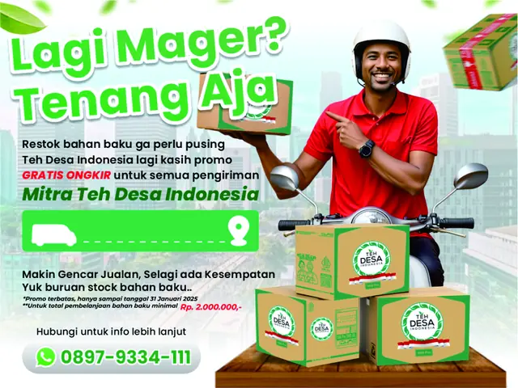
Pengiriman
Brand kemitraan yang hadir membantu kamu memulai usaha minuman dengan modal terjangkau, konsep simple, dan rasa yang disukai semua kalangan.
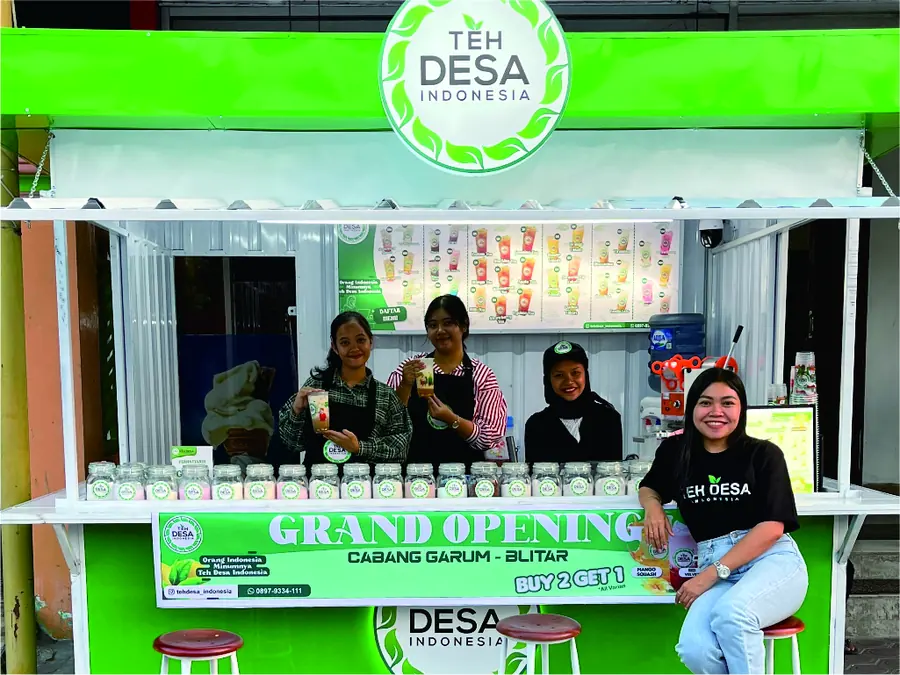
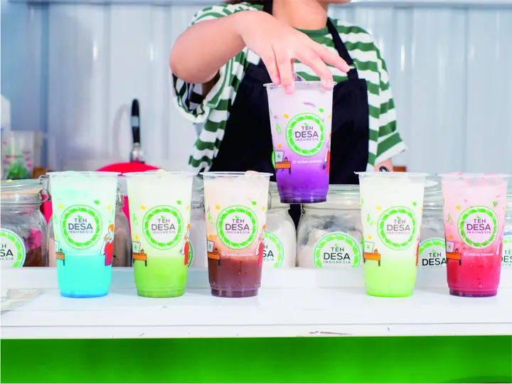
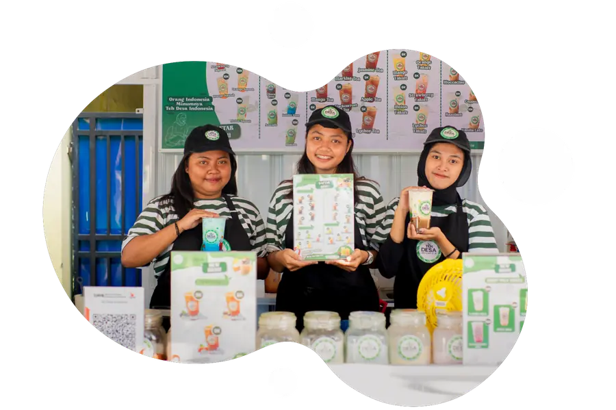
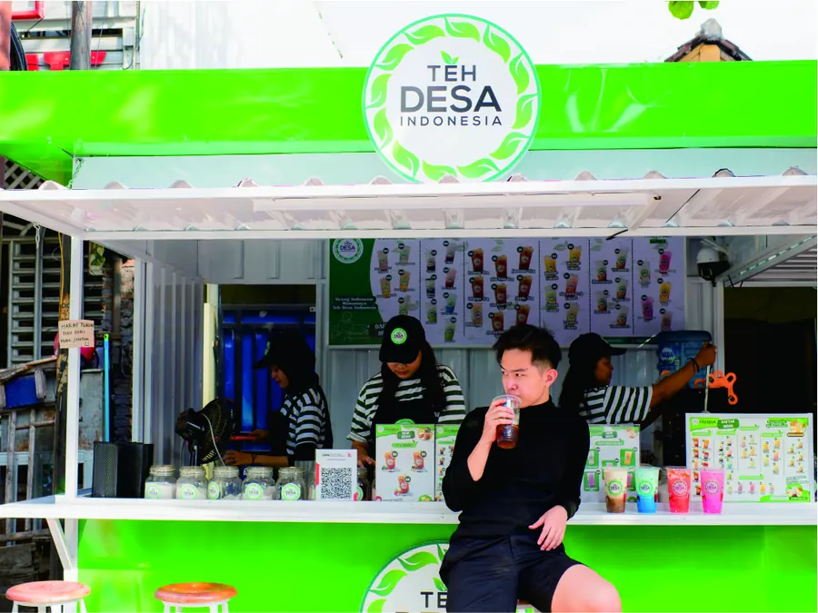
Sejak berdiri di tahun 2023, Teh Desa Indonesia hadir dengan misi sederhana: menghadirkan teh lokal berkualitas dengan rasa yang segar, dan membuka akses kemitraan bagi siapa saja yang ingin punya usaha sendiri.
Kami percaya bahwa peluang usaha tidak harus rumit. Karena itu, kami rancang sistem kemitraan yang bisa dijalankan bahkan oleh pemula sekalipun. Mulai dari bahan baku, peralatan, hingga pelatihan—semua kami siapkan.
Kami berdiri bukan hanya untuk berbisnis, tapi untuk jadi solusi — bagi mereka yang ingin punya penghasilan tambahan, bangun usaha sendiri, atau bahkan jadi pengusaha teh yang sukses.
Teh Desa Indonesia bukan cuma soal bisnis, tapi soal harapan. Kami ingin jadi bagian dari perjalanan para pejuang ekonomi lokal yang ingin naik level lewat usaha yang realistis dan berkelanjutan. Bersama Teh Desa Indonesia, kamu nggak cuma jualan teh — kamu sedang membangun masa depan.
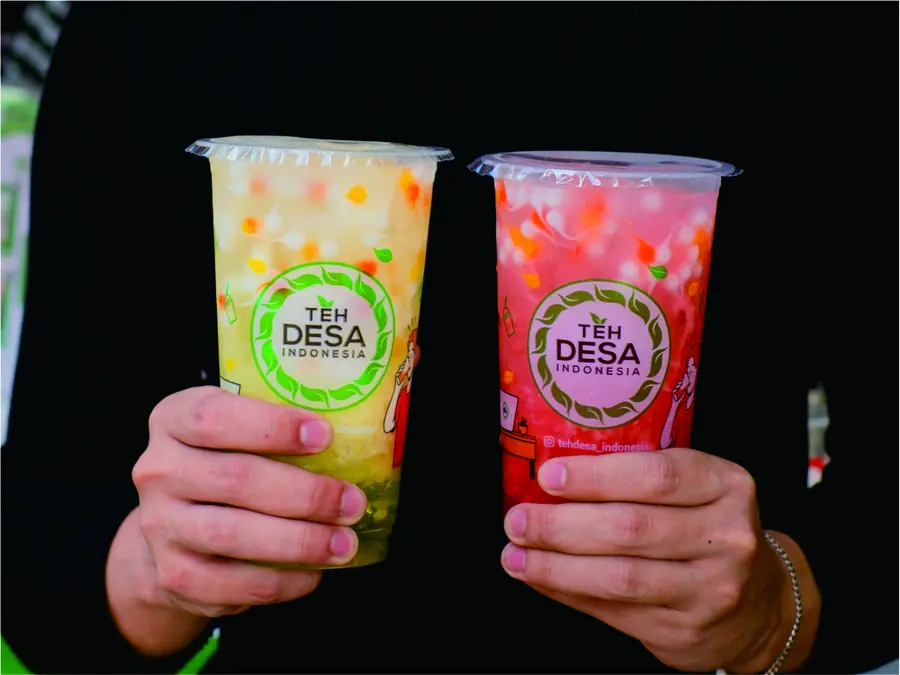
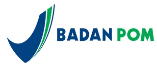
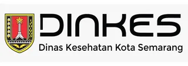
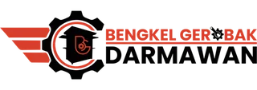
Happy Mitra
Projects
Hours Of Support
Staff Support
Pantau performa usaha kamu lewat laporan penjualan yang rapi, real-time, dan mudah dibaca. Cocok untuk bantu kamu ambil keputusan bisnis lebih cepat dan tepat.
Didukung oleh jaringan mitra di berbagai kota, Teh Desa Indonesia hadir lebih dekat ke pelanggan dan memudahkan distribusi ke seluruh Indonesia.
Peningkatan SDM adalah salah satu misi kami agar semua kandidat memiliki standar kualitas.
Bahan baku dikirim langsung dari pusat ke mitra dengan proses yang cepat dan aman. Kamu tinggal fokus jualan, kami yang urus logistiknya.
Tim support kami siap bantu kapan aja kamu butuh. Dari tanya stok sampai kendala teknis, semua bisa langsung ditangani tanpa ribet.
Pelayanan ini kami berikan guna mengatasi semua permasalah yang ada, dan CS kami bersedia memberikan solusi kapan pun.
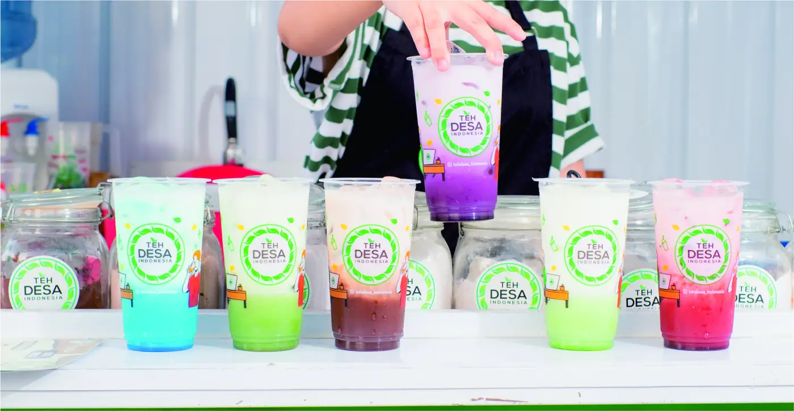
Hubungi admin marketing kami untuk informasi Promo / Konsultasi mengenai Kemitraan Teh Desa Indonesia.
Hubungi Kami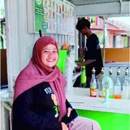
Awalnya ragu karena belum pernah jualan. Tapi setelah join Teh Desa Indonesia, semuanya dipandu step by step.
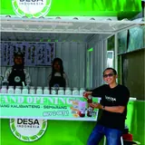
Yang paling saya suka, bahan baku selalu ready dan dikirim cepat. Gak perlu khawatir stok habis pas lagi rame pembeli.
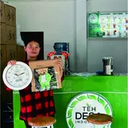
Brand-nya udah dikenal, jadi jualannya jauh lebih mudah. Banyak yang repeat order karena rasanya emang seger dan beda.
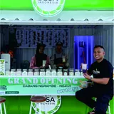
Saya suka konsepnya yang gak ribet. Booth simpel, menu jelas, dan support dari tim pusat juga oke banget.
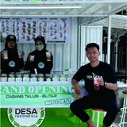
Modalnya masuk akal dan bisa langsung jalan. Saya mulai dari nol, sekarang udah buka dua titik di kampus dan dekat sekolah.
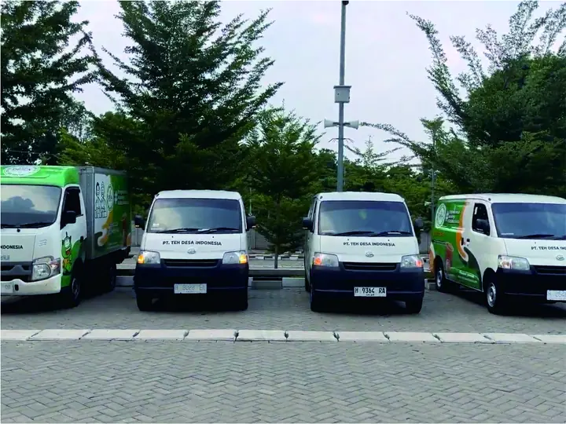
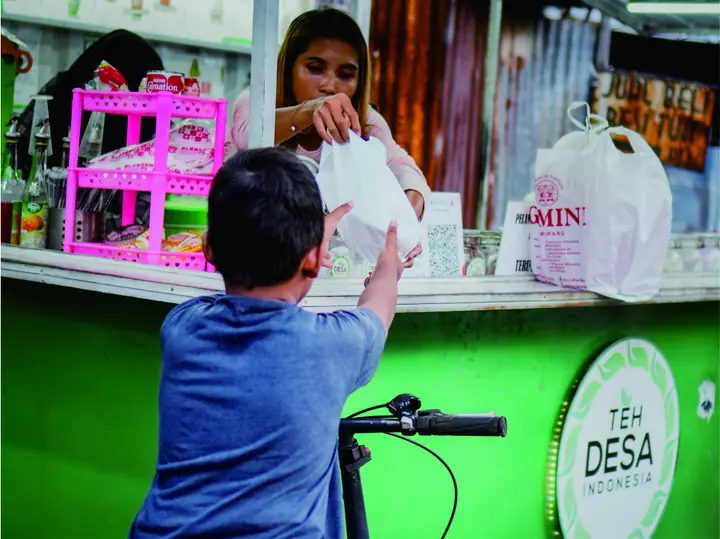
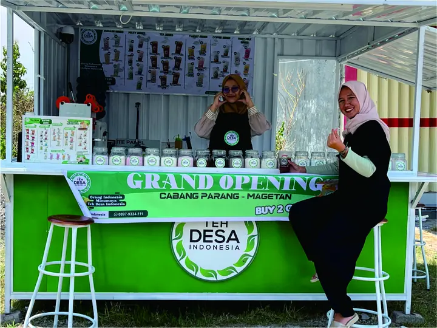
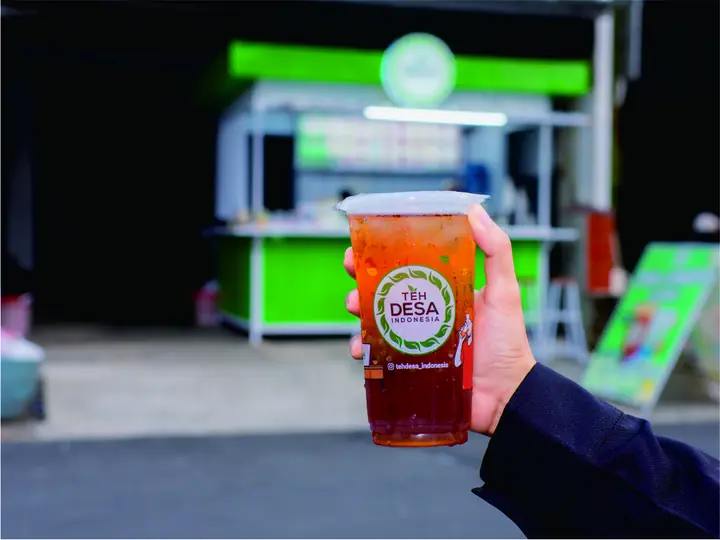
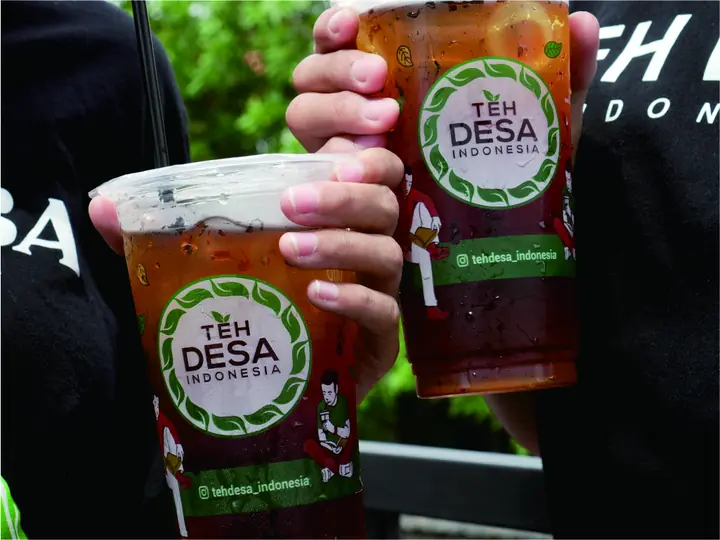
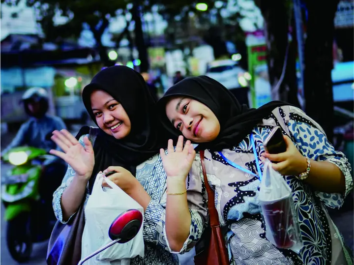
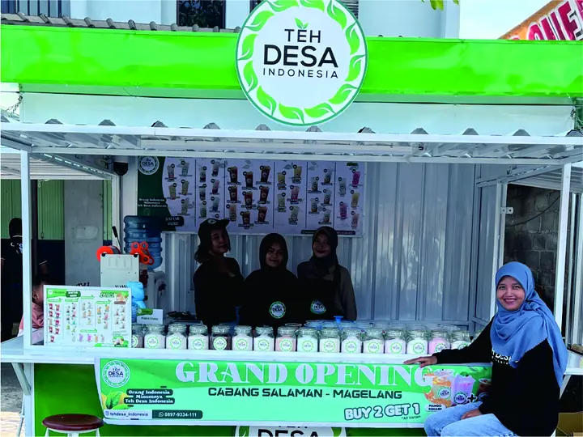
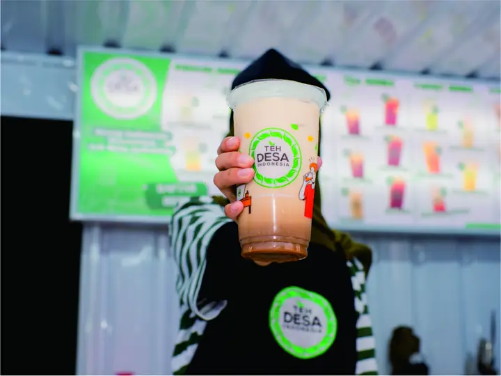
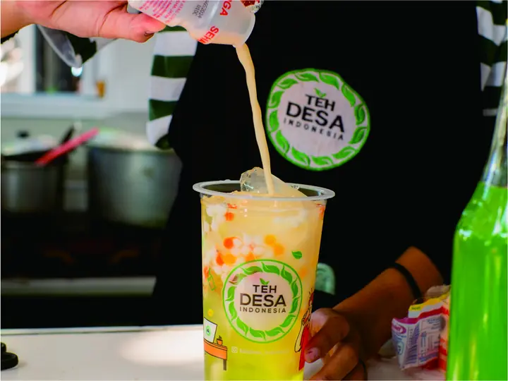
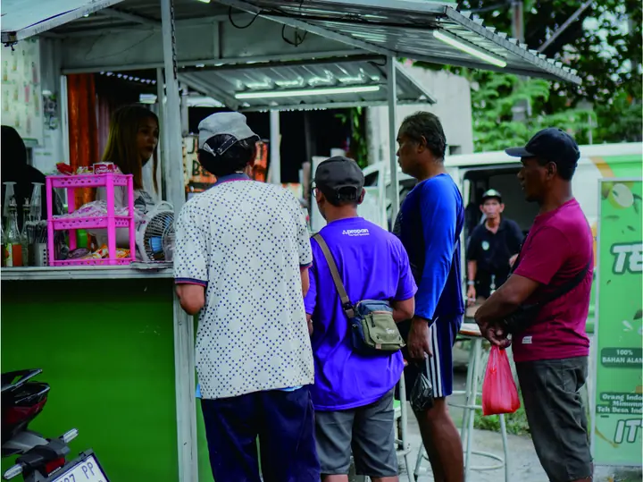
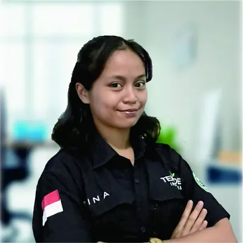
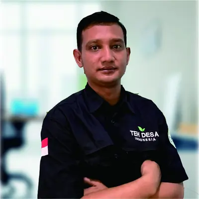
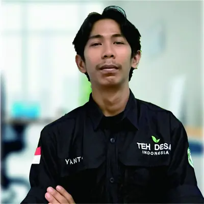
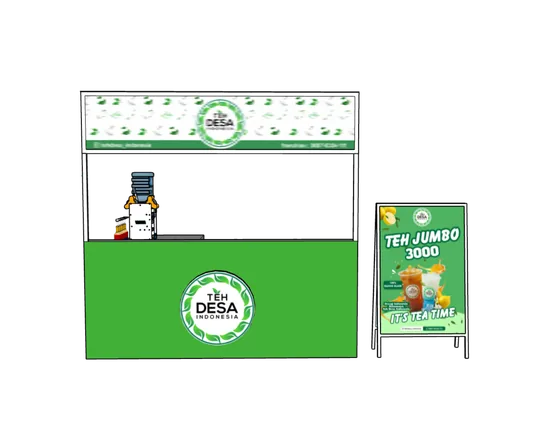
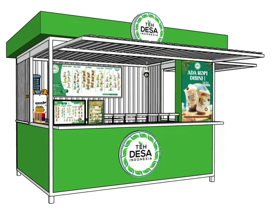
Teh Desa Indonesia adalah brand kemitraan es teh di Indonesia yang mengusung konsep UMKM dan minuman teh kekinian berbasis bahan lokal.
Untuk menjadi mitra Teh Desa Indonesia, calon mitra perlu menyiapkan lokasi jualan, modal sesuai paket kemitraan, serta komitmen menjalankan usaha kemitraan es teh. Teh Desa Indonesia akan mendampingi proses dari awal hingga siap jualan.
Modal awal kemitraan Teh Desa Indonesia dimulai dari Rp27 jutaan, tergantung paket kemitraan yang dipilih. Modal tersebut sudah termasuk perlengkapan usaha, bahan baku awal, dan pelatihan.
Iya, semua bahan baku utama seperti teh, gula cair, dan kemasan dikirim dari pusat. Jadi kamu gak perlu repot cari supplier sendiri.
Franchise Teh Desa Indonesia tidak menerapkan royalti bulanan. Mitra hanya dikenakan biaya royalti tahunan sebesar Rp1.000.000 untuk pengembangan brand dan dukungan operasional.
Prosesnya cepat. Setelah pendaftaran dan pembayaran selesai, pengiriman paket kemitraan biasanya butuh waktu sekitar 3–7 hari kerja tergantung lokasi.

Pengiriman
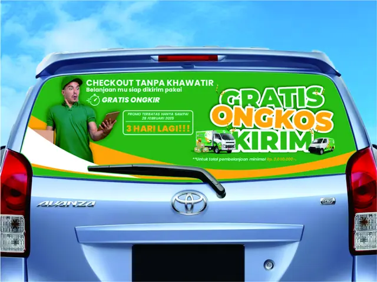
Promo
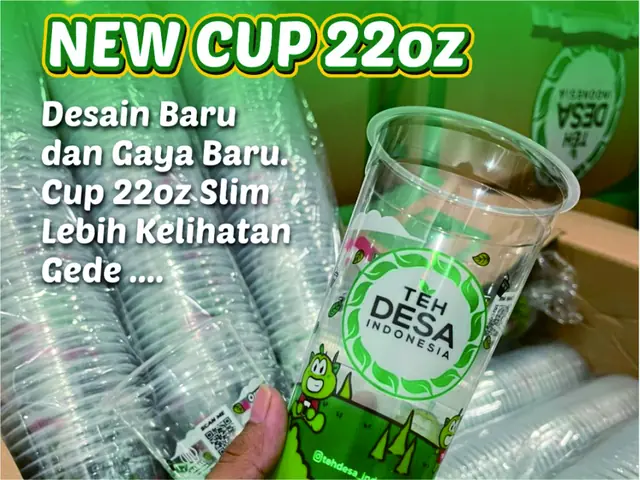
Entertainment
Jalan Menoreh Utara IV No. 58, Sampangan, Semarang
+62 897 9334 111
tehdesaindonesia@gmail.com
Senin-Minggu: 9AM - 5PM